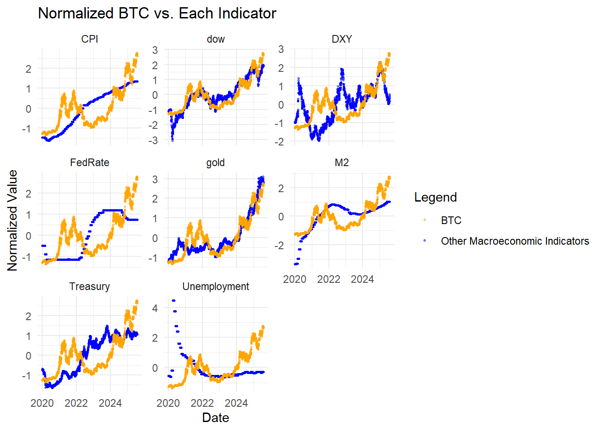

Bitcoin Analysis
Linear Regression
To analyze the relationship between macroeconomic indicators and Bitcoin price, a linear regression model was employed. This approach is appropriate because it allows us to quantify the individual effect of each predictor—such as CPI, interest rates, money supply (M2), and the stock market—on the response variable, Bitcoin price, while controlling for the influence of other variables. Linear regression is a widely used and interpretable statistical method for modeling continuous outcomes and identifying statistically significant predictors. By fitting the model, we were able to estimate coefficients for each macroeconomic factor, assess their significance using p-values, and construct confidence intervals to understand the precision of our estimates. The model helps determine which variables have meaningful associations with Bitcoin price and whether these relationships are positive or negative.
# A tibble: 9 × 7
term estimate std.error statistic p.value conf.low conf.high
<chr> <dbl> <dbl> <dbl> <dbl> <dbl> <dbl>
1 (Intercept) 0.0982 0.0696 1.41 1.59e- 1 -0.0384 0.235
2 CPI 0.390 1.08 0.359 7.19e- 1 -1.74 2.52
3 FedRate 0.00227 0.0218 0.104 9.17e- 1 -0.0406 0.0451
4 DXY -0.783 0.282 -2.78 5.53e- 3 -1.34 -0.230
5 M2 0.871 0.442 1.97 4.90e- 2 0.00393 1.74
6 Unemployment 0.00469 0.0428 0.109 9.13e- 1 -0.0793 0.0887
7 gold 0.132 0.0871 1.51 1.30e- 1 -0.0389 0.303
8 Treasury -0.0962 0.0258 -3.73 1.95e- 4 -0.147 -0.0456
9 dow 1.01 0.0711 14.2 7.37e-44 0.873 1.15 Linear Regression Model
\[\begin{align*} \hat{\text{BTC}} =\ & \beta_0 + \beta_1 \cdot \text{CPI} \quad (\beta_1 = 0.390) \\ & + \beta_2 \cdot \text{FedRate} \quad (\beta_2 = 0.00227) \\ & + \beta_3 \cdot \text{DXY} \quad (\beta_3 = -0.783) \\ & + \beta_4 \cdot \text{M2} \quad (\beta_4 = 0.871) \\ & + \beta_5 \cdot \text{Unemployment} \quad (\beta_5 = 0.00469) \\ & + \beta_6 \cdot \text{Gold} \quad (\beta_6 = 0.132) \\ & + \beta_7 \cdot \text{Treasury} \quad (\beta_7 = -0.0962) \\ & + \beta_8 \cdot \text{Dow} \quad (\beta_8 = 1.01) \end{align*}\]
Coefficient-by-Coefficient Interpretation
| Term | Estimate | Interpretation | Stat. Significance |
|---|---|---|---|
| (Intercept) | 0.0982 | When all predictors are 0, the expected Bitcoin price is 0.0982 (not very interpretable in practice). | ❌ Not significant |
| Consumer Price Index | 0.390 | A 1-unit increase in CPI is associated with a 0.39 increase in Bitcoin price. | ❌ Not significant (p = 0.719) |
| Federal Funds Rate | 0.00227 | Changes in the Fed Funds Rate have virtually no effect on Bitcoin price. | ❌ Not significant (p = 0.917) |
| U.S. Dollar Index | -0.783 | A 1-unit increase in the dollar index (DXY) is associated with a 0.783 decrease in Bitcoin price. | ✅ Significant (p = 0.0055) |
| M2 Money Supply | 0.871 | A 1-unit increase in the M2 money supply is associated with a 0.871 increase in Bitcoin price. | ✅ Marginally significant (p = 0.049) |
| Unemployment Rate | 0.00469 | No meaningful relationship between unemployment rate and Bitcoin price. | ❌ Not significant (p = 0.913) |
| Gold Price | 0.132 | Weakly positive correlation with gold prices, but not strong or reliable. | ❌ Not significant (p = 0.130) |
| 10 Year Treasury Yield | -0.0962 | A 1-unit increase in 10-year Treasury yield predicts a 0.0962 decrease in Bitcoin price. | ✅ Significant (p = 0.000195) |
| Dow Jones Index | 1.01 | A 1-unit increase in the Dow Jones Index is associated with a 1.01 increase in Bitcoin price. | ✅ Very significant (p ≈ 0) |
✅ Most Important Predictors
Strongest Positive Influence
Dow Jones Index (very strong correlation)
M2 Money Supply (positive monetary supply effect)
Strongest Negative Influence
U.S. Dollar Index (strong inverse relationship with the dollar index)
10 Year Treasury Yield (higher yields hurt Bitcoin price)
Insignificant Variables
Consumer Price Index, Federal Funds Rate, Unemployment Rate, and Gold Price show no statistically significant effect in this model. That means their estimated impact on Bitcoin is uncertain or likely due to noise.
Granger Causality
To further investigate the directional relationships between Bitcoin price and key macroeconomic indicators, Granger causality analysis was conducted. This method is appropriate because it tests whether past values of one time series (e.g., interest rates, money supply, or inflation) can help predict future values of another time series (in this case, Bitcoin price), beyond what is explained by the past values of Bitcoin itself. Unlike simple correlation, which only captures contemporaneous association, Granger causality is particularly suited for time-series data where temporal ordering matters. It helps uncover potential lead-lag dynamics and predictive influence among variables.
Bitcoin Price and Dow Jones Index
Granger causality H0: dow do not Granger-cause BTC
data: VAR object var_model_btc_dow
F-Test = 0.51757, df1 = 5, df2 = 4042, p-value = 0.7632Bitcoin Price and 10 Year Treasury Yield
Granger causality H0: Treasury do not Granger-cause BTC
data: VAR object var_model_btc_treasury
F-Test = 2.4423, df1 = 5, df2 = 4042, p-value = 0.03218Bitcoin Price and Gold Price
Granger causality H0: gold do not Granger-cause BTC
data: VAR object var_model_btc_gold
F-Test = 1.1905, df1 = 5, df2 = 4042, p-value = 0.3111Bitcoin Price and Unemployment Rate
Granger causality H0: Unemployment do not Granger-cause BTC
data: VAR object var_model_btc_unemployment
F-Test = 1.0096, df1 = 5, df2 = 4042, p-value = 0.4102Bitcoin Price and M2 Money Supply
Granger causality H0: M2 do not Granger-cause BTC
data: VAR object var_model_btc_m2
F-Test = 1.8808, df1 = 5, df2 = 4042, p-value = 0.09425Bitcoin Price and U.S. Dollar Index
Granger causality H0: DXY do not Granger-cause BTC
data: VAR object var_model_btc_dxy
F-Test = 2.0256, df1 = 5, df2 = 4042, p-value = 0.07193Bitcoin Price and Federal Funds Rate
Granger causality H0: FedRate do not Granger-cause BTC
data: VAR object var_model_btc_fedrate
F-Test = 1.712, df1 = 5, df2 = 4042, p-value = 0.1282Bitcoin Price and Consumer Price Index
Granger causality H0: CPI do not Granger-cause BTC
data: VAR object var_model_btc_cpi
F-Test = 0.90497, df1 = 5, df2 = 4042, p-value = 0.4767✅ Significant Granger Causality
10 Year Treasury Yield
p-value = 0.03218
Since the p-value is less than 0.05, we reject the null hypothesis.
Interpretation: Past values of 10 Year Treasury Yield Granger-cause Bitcoin price. This suggests that interest rate movements (as captured by 10 Year Treasury Yield) have predictive power over Bitcoin prices.
⚠️ Marginal/Weak Evidence of Granger Causality
M2 Money Supply
p-value = 0.09425
Although the result is not statistically significant at the 5% level, it is close to the 10% threshold.
Interpretation: There is some weak evidence that changes in money supply may help forecast Bitcoin price, but it’s not strong enough to draw firm conclusions.
U.S. Dollar Index (DXY)
p-value = 0.07193
Similar to M2, the result is marginally significant at the 10% level, suggesting a potential predictive relationship.
Interpretation: Dollar strength may have some predictive influence on Bitcoin, though the evidence is not strong at conventional significance levels.
❌ No Granger Causality Detected
Dow Jones Index (p = 0.7632)
Gold Price (p = 0.3111)
Unemployment Rate (p = 0.4102)
Federal Funds Rate (p = 0.1282)
Consumer Price Index (CPI) (p = 0.4767)
For all of these indicators, the p-values are well above 0.10, meaning we fail to reject the null hypothesis. Interpretation: There is no statistical evidence that these variables Granger-cause Bitcoin price. Their past values do not help predict Bitcoin movements in this model.
Conclusion
The analysis integrates insights from both a multiple linear regression model and Granger causality tests to assess the influence of various macroeconomic indicators on Bitcoin prices.
From the linear regression model, several predictors showed statistically significant relationships with Bitcoin price. Most notably, the Dow Jones Index exhibited a strong positive association (p < 0.001), suggesting that increases in stock market performance correlate with higher Bitcoin prices. 10 Year Treasury Yield had a significant negative effect (p < 0.001), indicating that higher interest rates may dampen Bitcoin demand, possibly due to rising opportunity costs. DXY (Dollar Index) also showed a significant negative effect (p = 0.005), implying that Bitcoin tends to decline as the U.S. dollar strengthens. Meanwhile, M2 money supply had a moderate positive effect (p ≈ 0.049), suggesting liquidity expansion may support Bitcoin valuation. Other variables like CPI, FedRate, Unemployment, and Gold did not exhibit statistically significant impacts in the regression model.
In contrast, the Granger causality analysis, which captures predictive relationships over time, revealed that 10 Year Treasury Yield Granger-cause Bitcoin price (p = 0.032), confirming their temporal influence. M2 money supply (p = 0.094) and DXY (p = 0.072) provided weak evidence of predictive power at the 10% significance level, but other indicators including the Dow Jones, despite its strong regression coefficient, did not Granger-cause Bitcoin price. This implies that while these factors may co-move with Bitcoin (as seen in regression), they do not necessarily have predictive power over Bitcoin’s future movements.